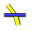
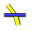
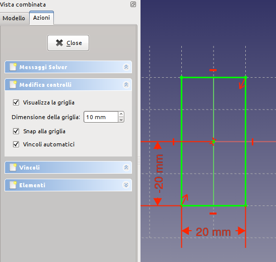
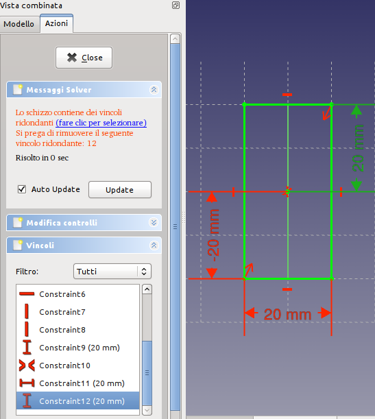
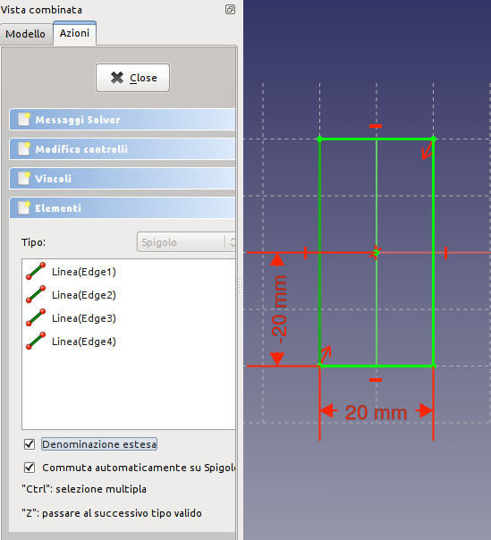
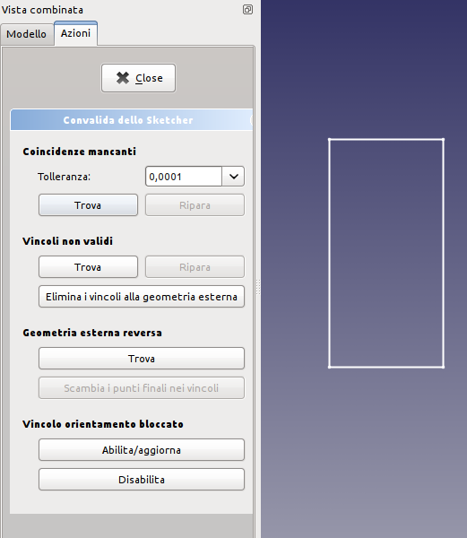
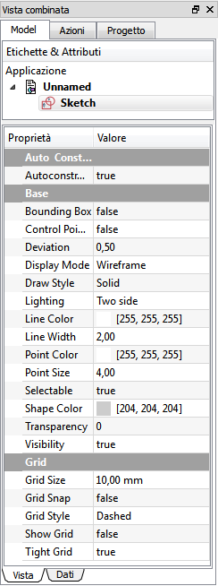

L'ambiente  Sketcher serve a creare delle geometrie 2D destinate ad essere utilizzate nel modulo PartDesign per produrre oggetti Parte o in altri moduli, come ad esempio in Architettura.
Sketcher serve a creare delle geometrie 2D destinate ad essere utilizzate nel modulo PartDesign per produrre oggetti Parte o in altri moduli, come ad esempio in Architettura.
In genere, una geometria 2D è il punto di partenza per la maggior parte dei modelli CAD. Un semplice schizzo 2D può essere estruso per creare una forma 3D; altri schizzi 2D possono essere usati per creare delle tasche in questa forma e ulteriori schizzi possono essere utilizzati per definire delle estrusioni sulla superficie dell'oggetto 3D.
Assieme alle Operazioni booleane lo schizzo costituisce la base per generare il progetto di una forma solida.
L'ambiente Sketcher mette a disposizione i vincoli. Consente di vincolare le forme 2D a precise definizioni geometriche.
Un solutore dei vincoli calcola la quantità di vincoli applicati alla geometria 2D e permette l'esplorazione interattiva dei gradi di libertà dello schizzo.
Un buon esempio di utilizzo dello schizzo si trova nel forum francese in: Patte à l'aide du sketcher, Création d'une cavité dans la Patte. In italiano, nella sezione Esercitazioni, è descritto uno schizzo vincolato.
Nozioni di base sugli schizzi vincolati
Per spiegare come funziona il modulo Sketcher, è utile fare un confronto con il modo tradizionale di disegnare.
Disegno tradizionale
Il modo tradizionale di disegno CAD è derivato dal vecchio tavolo da disegno.
Le viste ortogonali 2D sono disegnate manualmente e finalizzate alla produzione di disegni tecnici (noti anche come dettagli o particolari). Gli oggetti sono disegnati esattamente con le loro forme, misure o dimensioni previste. Per tracciare una linea orizzontale lunga 100 mm a partire dal punto (0,0), si attiva lo strumento linea, si fa clic sullo schermo o si inserisce le coordinate (0,0) per il primo punto, poi si fa un secondo clic o si inserisce il secondo punto di coordinate (100,0). Oppure, si costruisce una linea base senza riguardo alla sua posizione e in seguito la si sposta. Dopo aver disegnato le geometrie si aggiungono le dimensioni.
Schizzo vincolato
Lo strumento Sketcher si allontana da questa logica. Non è più necessario disegnare gli oggetti esattamente come sono desiderati, perché è possibile ridefinirli in seguito tramite i vincoli. È possibile disegnare liberamente gli oggetti e dopo, fintanto che non vengono vincolati, modificarli. Sostanzialmente, essi sono flottanti, quindi si possono spostare, allungare, scalare, e così via. Questo permette una grande flessibilità nel processo di progettazione.
Cosa sono i vincoli?
Invece delle dimensioni, i vincoli vengono utilizzati per limitare i gradi di libertà di un oggetto. Ad esempio, una linea senza vincoli ha 4 gradi di libertà (DOF Degrees Of Freedom): essa può essere spostata orizzontalmente o verticalmente, può essere allungata, e può essere ruotata.
Applicando a una linea un vincolo orizzontale o verticale, oppure un vincolo angolare (rispetto ad un'altra linea o ad uno degli assi) si limita la sua capacità di ruotare, lasciandola quindi con solo 2 gradi di libertà. Bloccando uno dei suoi punti rispetto all'origine si rimuove un ulteriore grado di libertà. Applicando un vincolo dimensionale si rimuove l'ultimo grado di libertà. A questo punto, la linea è quindi considerata completamente vincolata.
Più oggetti possono essere vincolati tra di loro. Due linee possono essere unite attraverso uno dei loro punti con il vincolo punto coincidente. Tra due linee si può impostare un angolo, oppure impostarle perpendicolari. Una linea può essere tangente ad un arco o a un cerchio, e così via. Per vincolare uno schizzo complesso, con più oggetti, sono possibili diverse soluzioni, e renderlo completamente vincolato significa che almeno una di queste è stato raggiunta in base ai vincoli applicati.
Ci sono due tipi di vincoli: geometrici e dimensionali. Essi sono descritti nella successiva sezione dedicata agli strumenti.
I vincoli sono controllati dal solutore
Uso corretto dell'ambiente Sketcher
Il modulo Sketcher non è pensato per produrre disegni dettagliati in 2D.
Dopo che gli schizzi sono stati utilizzati per generare una forma solida vengono automaticamente nascosti. I vincoli (la quotatura dei vincoli e i segni grafici di vincolo) sono visibili solo in modalità Modifica sketch.
Se serve solo produrre delle viste 2D per la stampa e non si intende creare dei modelli 3D, si può utilizzare l'ambiente Draft che permette anche di creare delle geometrie 2D non ancora disponibili in Sketcher, come le B-Spline o i Poligoni.
Sketching Workflow
Uno Sketch è sempre in 2 dimensioni (2D). Per creare un solido, viene creato prima lo schizzo 2D di una singola area chiusa e poi essa viene estrusa o rivoluzionata per aggiungere la terza dimensione, creando un solido 3D dallo schizzo 2D.
Se lo schizzo contiene dei segmenti che si intersecano, punti non collocati esattamente su un segmento, o punti finali di segmenti adiacenti che non sono coincidenti, l'operazione di Pad o di Rivoluzione non crea un solido. Come eccezione, questa regola non si applica alla geometria di costruzione (linee blu).
All'interno dell'area racchiusa si possono avere delle piccole aree non sovrapposte. Queste diverranno dei "vuoti" quando si crea il solido 3D.
Gli strumenti
Gli strumenti dell'Ambiente Sketcher si trovano nel menu che appare quando si carica questo ambiente.
Geometria dello schizzo
Gli strumenti per creare gli oggetti.
-
 Punto: Disegna un punto.
Punto: Disegna un punto. -
 Linea tra due punti: Disegna un segmento delimitato da due punti.
Linea tra due punti: Disegna un segmento delimitato da due punti. -
 Arco: Disegna un arco di circonferenza specificando il centro, il raggio, l'angolo iniziale e l'angolo finale.
Arco: Disegna un arco di circonferenza specificando il centro, il raggio, l'angolo iniziale e l'angolo finale. -
 Arco da tre punti: Disegna un arco da due punti finali e un punto della circonferenza.
Arco da tre punti: Disegna un arco da due punti finali e un punto della circonferenza. -
 Circonferenza: Disegna una circonferenza prendendo in input il centro e il raggio.
Circonferenza: Disegna una circonferenza prendendo in input il centro e il raggio. -
 Circonferenza da tre punti : Disegna un cerchio da tre punti sulla circonferenza.
Circonferenza da tre punti : Disegna un cerchio da tre punti sulla circonferenza. -
 Sezioni di coni:
Sezioni di coni:
-
 Ellisse dal centro : Disegna un'ellisse dal centro, raggio maggiore e raggio minore.
Ellisse dal centro : Disegna un'ellisse dal centro, raggio maggiore e raggio minore. -
 Ellisse da tre punti : Disegna una ellisse da due punti del raggio maggiore) e un punto del raggio minore.
Ellisse da tre punti : Disegna una ellisse da due punti del raggio maggiore) e un punto del raggio minore. -
 Arco di ellisse : Disegna un arco di ellisse dal punto centrale, un punto del raggio maggiore, il punto iniziale e il punto finale.
Arco di ellisse : Disegna un arco di ellisse dal punto centrale, un punto del raggio maggiore, il punto iniziale e il punto finale.  Arco di iperbole: Disegna un arco di iperbole. (v0.17)
Arco di iperbole: Disegna un arco di iperbole. (v0.17) Arco di parabola: Disegna un arco di parabola. (v0.17)
Arco di parabola: Disegna un arco di parabola. (v0.17)
-
-
 Polilinea : Disegna una linea composta da segmenti definiti da punti.
Polilinea : Disegna una linea composta da segmenti definiti da punti. -
 Rettangolo: Disegna un rettangolo specificando gli angoli opposti.
Rettangolo: Disegna un rettangolo specificando gli angoli opposti. -
 Triangolo equilatero: Disegna un triangolo equilatero inscritto in una circonferenza di costruzione.
Triangolo equilatero: Disegna un triangolo equilatero inscritto in una circonferenza di costruzione. -
 Quadrato: Disegna un quadrato inscritto in una circonferenza di costruzione.
Quadrato: Disegna un quadrato inscritto in una circonferenza di costruzione. -
 Pentagono: Disegna un pentagono inscritto in una circonferenza di costruzione.
Pentagono: Disegna un pentagono inscritto in una circonferenza di costruzione. -
 Esagono: Disegna un esagono inscritto in una circonferenza di costruzione.
Esagono: Disegna un esagono inscritto in una circonferenza di costruzione. -
 Ettagono: Disegna un ettagono inscritto in una circonferenza di costruzione.
Ettagono: Disegna un ettagono inscritto in una circonferenza di costruzione. -
 Ottagono: Disegna un ottagono inscritto in una circonferenza di costruzione.
Ottagono: Disegna un ottagono inscritto in una circonferenza di costruzione. -
 Asola: Disegna un rettangolo con due lati opposti raccordati con un semicerchio, un'asola.
Asola: Disegna un rettangolo con due lati opposti raccordati con un semicerchio, un'asola. -
 Raccorda: Raccorda due linee unite in un punto. Selezionare entrambe le linee o fare clic sul punto di angolo, poi attivare lo strumento.
Raccorda: Raccorda due linee unite in un punto. Selezionare entrambe le linee o fare clic sul punto di angolo, poi attivare lo strumento. -
 Rifila: Accorcia una linea, un cerchio o un arco fino al primo nodo, punto di intersezione.
Rifila: Accorcia una linea, un cerchio o un arco fino al primo nodo, punto di intersezione. -
 Geometria esterna: Crea un segmento collegato a una geometria esterna.
Geometria esterna: Crea un segmento collegato a una geometria esterna. -
 Linea di costruzione: Commuta un elemento in modalità Costruzione. L'oggetto selezionato e impostato come elemento di costruzione non sarà utilizzato in un'operazione di geometria 3D (es una linea di costruzione). Fino alla versione 0.15. Questa è l'icona che è stata utilizzata fino alla v0.15. Fino a FreeCAD v0.16 l'utente doveva creare prima una regolare geometria di Sketchup (bianca) e quindi utilizzare questo strumento per modificarla in geometria di costruzione (blu).
Linea di costruzione: Commuta un elemento in modalità Costruzione. L'oggetto selezionato e impostato come elemento di costruzione non sarà utilizzato in un'operazione di geometria 3D (es una linea di costruzione). Fino alla versione 0.15. Questa è l'icona che è stata utilizzata fino alla v0.15. Fino a FreeCAD v0.16 l'utente doveva creare prima una regolare geometria di Sketchup (bianca) e quindi utilizzare questo strumento per modificarla in geometria di costruzione (blu). -
 Costruzione: Commuta un elemento selezionato o l'intera barra delle geometrie in modalità Costruzione. Introdotto dalla versione 0.16. In FreeCAD v0.16 è stato aggiunta la capacità di creare la geometria direttamente in modalità di costruzione, e quindi l'icona è stata cambiata in questa. Selezionando una geometria di Sketcher esistente e facendo clic su questo strumento si commuta la geometria tra la modalità normale e di costruzione proprio come nelle versioni precedenti di FreeCAD. A partire da FreeCAD v0.16, selezionando questo strumento quando non è selezionata alcuna geometria Sketcher cambia la modalità (da normale a geometria di costruzione) in cui verranno creati gli oggetti futuri.
Costruzione: Commuta un elemento selezionato o l'intera barra delle geometrie in modalità Costruzione. Introdotto dalla versione 0.16. In FreeCAD v0.16 è stato aggiunta la capacità di creare la geometria direttamente in modalità di costruzione, e quindi l'icona è stata cambiata in questa. Selezionando una geometria di Sketcher esistente e facendo clic su questo strumento si commuta la geometria tra la modalità normale e di costruzione proprio come nelle versioni precedenti di FreeCAD. A partire da FreeCAD v0.16, selezionando questo strumento quando non è selezionata alcuna geometria Sketcher cambia la modalità (da normale a geometria di costruzione) in cui verranno creati gli oggetti futuri.
Vincoli dello schizzo
I vincoli sono utilizzati per stabilire le relazioni tra gli elementi del disegno, e per bloccare il disegno lungo l'asse verticale e l'asse orizzontale. Alcuni vincoli richiedono dei Vincoli di supporto.
Vincoli non associati a valori numerici
-
 Coincidente: Crea un vincolo di coincidenza (punto-con-punto) tra due punti selezionati.
Coincidente: Crea un vincolo di coincidenza (punto-con-punto) tra due punti selezionati. -
 Punto su oggetto: Crea un vincolo (fissa) un punto-su-un-oggetto sull'elemento selezionato.
Punto su oggetto: Crea un vincolo (fissa) un punto-su-un-oggetto sull'elemento selezionato. -
 Verticale: Crea un vincolo verticale per le linee o le polilinee selezionate. Si può selezionare più oggetti.
Verticale: Crea un vincolo verticale per le linee o le polilinee selezionate. Si può selezionare più oggetti. -
 Orizzontale: Crea un vincolo orizzontale per le linee o le polilinee selezionate. Si può selezionare più oggetti.
Orizzontale: Crea un vincolo orizzontale per le linee o le polilinee selezionate. Si può selezionare più oggetti. -
 Parallela: Crea un vincolo di parallelismo tra due linee selezionate.
Parallela: Crea un vincolo di parallelismo tra due linee selezionate. -
 Perpendicolare: Crea un vincolo di perpendicolarità tra due linee selezionate.
Perpendicolare: Crea un vincolo di perpendicolarità tra due linee selezionate. -
 Tangente: Crea un vincolo di tangenza tra due entità selezionate, o un vincolo collineare tra due segmenti di linea.
Tangente: Crea un vincolo di tangenza tra due entità selezionate, o un vincolo collineare tra due segmenti di linea. -
 Uguaglianza: Crea un vincolo di uguaglianza tra due entità selezionate. Se usato su cerchio o archi, il raggio viene posto uguale.
Uguaglianza: Crea un vincolo di uguaglianza tra due entità selezionate. Se usato su cerchio o archi, il raggio viene posto uguale. -
 Simmetria: Crea un vincolo simmetrica tra 2 punti rispetto a una linea.
Simmetria: Crea un vincolo simmetrica tra 2 punti rispetto a una linea. -
 Fissa: v 0.17 Consente di fissare un elemento geometrico in una data posizione applicando un singolo vincolo. Dovrebbe essere particolarmente utile per lavorare con le B-Splines. Vedere https://forum.freecadweb.org/viewtopic.php?f=9&t=26572
Fissa: v 0.17 Consente di fissare un elemento geometrico in una data posizione applicando un singolo vincolo. Dovrebbe essere particolarmente utile per lavorare con le B-Splines. Vedere https://forum.freecadweb.org/viewtopic.php?f=9&t=26572
Vincoli associati a dati
Per questi vincoli si possono usare le espressioni. I dati possono essere prelevati da un foglio di calcolo.
Le icone blu di questi vincoli si riferiscono alle funzioni introdotte nella versione 0.16 di FreeCAD, attivabili con Commuta vincoli.
{kind=link}
-
 Bloccato: Crea un vincolo che blocca l'elemento selezionato fissando le sue dimensioni verticali e orizzontali rispetto all'origine (le dimensioni si possono modificare in seguito).
Bloccato: Crea un vincolo che blocca l'elemento selezionato fissando le sue dimensioni verticali e orizzontali rispetto all'origine (le dimensioni si possono modificare in seguito). -
 Distanza orizzontale: Fissa la distanza orizzontale tra 2 punti o tra gli estremi di una linea. Se viene selezionato un solo elemento, la distanza viene impostata a partire dall'origine.
Distanza orizzontale: Fissa la distanza orizzontale tra 2 punti o tra gli estremi di una linea. Se viene selezionato un solo elemento, la distanza viene impostata a partire dall'origine. -
 Distanza verticale: Fissa la distanza verticale tra 2 punti o tra gli estremi di una linea. Se viene selezionato un solo elemento, la distanza viene impostata a partire dall'origine.
Distanza verticale: Fissa la distanza verticale tra 2 punti o tra gli estremi di una linea. Se viene selezionato un solo elemento, la distanza viene impostata a partire dall'origine. -
 Lunghezza: Vincola la lunghezza di una linea selezionata.
Lunghezza: Vincola la lunghezza di una linea selezionata. -
 Raggio: Vincola il raggio di un arco o un cerchio selezionato.
Raggio: Vincola il raggio di un arco o un cerchio selezionato. -
 Angolo interno: Fissa l'angolo interno tra due linee selezionate (o l'inclinazione di una linea).
Angolo interno: Fissa l'angolo interno tra due linee selezionate (o l'inclinazione di una linea). -
  Rifrazione: Crea un vincolo di rifrazione tra due linee per simulare secondo la Legge di Snell un raggio di luce che attraversa un'interfaccia.
 Rifrazione: Crea un vincolo di rifrazione tra due linee per simulare secondo la Legge di Snell un raggio di luce che attraversa un'interfaccia. -
 Allineamento interno: Allinea gli elementi selezionati alla forma selezionata, ad esempio una linea da convertire in asse maggiore di una ellisse.
Allineamento interno: Allinea gli elementi selezionati alla forma selezionata, ad esempio una linea da convertire in asse maggiore di una ellisse.
{kind=link}
{kind=link}
{kind=link}
{kind=link}
{kind=link}
{kind=link}
{kind=link}
-
 Commuta vincoli: Commuta una serie di vincoli, quelli associati a un valore numerico, da Decisivi a Indicatori e viceversa. Introdotto dalla versione 0.16
Commuta vincoli: Commuta una serie di vincoli, quelli associati a un valore numerico, da Decisivi a Indicatori e viceversa. Introdotto dalla versione 0.16
Non ancora attivati
- Concentrico
- Angolo esterno
- Punto alla fine
- Punto in centro
- Punto all'inizio
- Punto su oggetto
- Tangente alla fine
- Tangente all'inizio
{kind=link}
{kind=link}
{kind=link}
{kind=link}
{kind=link}
{kind=link}
{kind=link}
{kind=link}
Altro
-
 Nuovo schizzo: Crea un nuovo schizzo su una faccia selezionata o in un piano. Se non si esegue nessuna selezione, di default, viene utilizzato il piano XY.
Nuovo schizzo: Crea un nuovo schizzo su una faccia selezionata o in un piano. Se non si esegue nessuna selezione, di default, viene utilizzato il piano XY. -
 Edita schizzo: Modifica lo schizzo selezionato.
Edita schizzo: Modifica lo schizzo selezionato. -
 Esci: Termina la modalità di modifica dello schizzo.
Esci: Termina la modalità di modifica dello schizzo. -
 Vista schizzo: Imposta la vista del modello in modo perpendicolare al piano dello schizzo.
Vista schizzo: Imposta la vista del modello in modo perpendicolare al piano dello schizzo. -
 Mappa schizzo su faccia: Mappa uno schizzo sulla faccia di un solido selezionata in precedenza.
Mappa schizzo su faccia: Mappa uno schizzo sulla faccia di un solido selezionata in precedenza. - Riposiziona schizzo: Permette di modificare la posizione di uno schizzo
- Convalida lo schizzo: Permette di controllare se nell'area di tolleranza ci sono dei punti distinti e di farli coincidere.
-
 Unisci schizzi: Unisce due o più schizzi.
Unisci schizzi: Unisce due o più schizzi. -
 Rifletti schizzo: Riflette uno schizzo rispetto all'asse verticale, o all'asse orizzontale e all'origine.
Rifletti schizzo: Riflette uno schizzo rispetto all'asse verticale, o all'asse orizzontale e all'origine.
Strumenti dello Sketcher
-
 Chiudi Forma: Crea una forma chiusa applicando i vincoli di coincidenza ai punti finali.
Chiudi Forma: Crea una forma chiusa applicando i vincoli di coincidenza ai punti finali.
-
 Collega Segmenti: Collega gli elementi dello schizzo applicando i vincoli di coincidenza ai punti finali.
Collega Segmenti: Collega gli elementi dello schizzo applicando i vincoli di coincidenza ai punti finali.
-
 Seleziona Vincoli: Seleziona i vincoli di un elemento dello schizzo.
Seleziona Vincoli: Seleziona i vincoli di un elemento dello schizzo.
-
 Seleziona Origine: Seleziona l'origine di uno schizzo.
Seleziona Origine: Seleziona l'origine di uno schizzo.
-
 Seleziona Asse Y: Seleziona l'asse verticale di uno schizzo.
Seleziona Asse Y: Seleziona l'asse verticale di uno schizzo.
-
 Seleziona Asse X: Seleziona l'asse orizzontale di uno schizzo.
Seleziona Asse X: Seleziona l'asse orizzontale di uno schizzo.
-
 Seleziona i vincoli ridondanti: Seleziona i vincoli ridondanti di uno schizzo.
Seleziona i vincoli ridondanti: Seleziona i vincoli ridondanti di uno schizzo.
-
 Seleziona i vincoli in conflitto: Seleziona i vincoli in conflitto di uno schizzo.
Seleziona i vincoli in conflitto: Seleziona i vincoli in conflitto di uno schizzo.
-
 Seleziona gli elementi associati da vincoli: Evidenzia gli elementi dello schizzo associati ai vincoli selezionati.
Seleziona gli elementi associati da vincoli: Evidenzia gli elementi dello schizzo associati ai vincoli selezionati.
-
 Mostra/Nascondi la geometria interna: Ricrea la geometria interna mancante di un elemento selezionato, oppure la cancella se non serve, per ora è applicabile solo a ellissi.
Mostra/Nascondi la geometria interna: Ricrea la geometria interna mancante di un elemento selezionato, oppure la cancella se non serve, per ora è applicabile solo a ellissi.
-
 Simmetria: Copia un elemento dello schizzo in modo simmetrico rispetto ad una linea a scelta.
Simmetria: Copia un elemento dello schizzo in modo simmetrico rispetto ad una linea a scelta.
-
 Clona: Clona un elemento dello schizzo.
Clona: Clona un elemento dello schizzo.
-
 Copia: Copia un elemento dello schizzo.
Copia: Copia un elemento dello schizzo.
-
 Schiera lineare: Crea una schiera con gli elementi dello schizzo selezionati.
Schiera lineare: Crea una schiera con gli elementi dello schizzo selezionati.
-
 Cambia spazio virtuale: v 0.17 Permette di "nascondere" i vincoli e renderli nuovamente visibili. Vedere https://forum.freecadweb.org/viewtopic.php?f=9&t=26614
Cambia spazio virtuale: v 0.17 Permette di "nascondere" i vincoli e renderli nuovamente visibili. Vedere https://forum.freecadweb.org/viewtopic.php?f=9&t=26614
Preferenze
-
 Preferences...: Preferenze disponibili negli strumenti Sketcher.
Preferences...: Preferenze disponibili negli strumenti Sketcher.
Migliori pratiche
Ogni utente CAD, nel corso del tempo, sviluppa un proprio modo di lavorare, ma ci sono alcuni criteri generali che è utile seguire.
- Una serie di schizzi semplici è più facile da gestire rispetto a un unico schizzo molto complesso. Ad esempio, si può creare un primo schizzo per produrre (con una estrusione o una rivoluzione) la forma 3D di base, poi un secondo schizzo per eseguire i fori o le aperture (tasche). Alcuni dettagli possono essere omessi e realizzati in seguito come operazioni 3D. È possibile decidere di evitare gli smussi nel disegno, se ce ne sono troppi, e aggiungerli dopo come caratteristica 3D.
- Creare sempre un profilo chiuso altrimenti il disegno non produrrà un solido, bensì una serie di facce aperte. Quando si desidera escludere alcuni oggetti nella creazione del solido, trasformarli in elementi di costruzione con lo strumento Modalità costruzione.
- Utilizzare la funzione Vincoli automatici per ridurre il numero di vincoli da inserire manualmente.
- Come regola generale, si applicano prima i vincoli geometrici, poi i vincoli dimensionali, e infine si blocca il disegno. Da ricordare: le regole sono fatte per essere infrante. Quando ci sono difficoltà nel manipolare il disegno, può essere utile vincolare alcuni oggetti prima di completare il profilo.
- Se possibile, centrare il disegno nell'origine (0,0) con il vincolo Blocca. Se il disegno non è simmetrico, posizionare uno dei suoi punti nell'origine, o scegliere una cifra tonda semplice per le distanze di blocco. Nella versione v0.12, i vincoli esterni (vincoli rispetto a geometrie 3D esistenti come a bordi o altri schizzi) non sono ancora implementati. Questo significa che per collegare i disegni successivi alla geometria del primo schizzo, si devono impostare manualmente le distanze relative al primo disegno. Un vincolo di blocco (25,75) dall'origine è più facile da ricordare che (23.47,73.02).
- Se c'è la possibilità di scegliere tra il vincolo lunghezza
 e il vincolo distanza orizzontale o distanza verticale , preferire questi ultimi. I vincoli di distanza orizzontale e verticale sono computazionalmente più economici.
e il vincolo distanza orizzontale o distanza verticale , preferire questi ultimi. I vincoli di distanza orizzontale e verticale sono computazionalmente più economici. - In generale, i vincoli migliori da utilizzare sono: Orizzontale e Verticale, Lunghezza Orizzontale e Verticale, Tangente nel punto. Se possibile, limitare l'uso di questi vincoli: Lunghezza generica, Tangenza Edge-to-edge, Punto su linea; Simmetria.
{kind=link}
{kind=link}
Tutorial
Il solutore dei vincoli
I controlli dello schizzo
Quando viene avviato uno schizzo nella vista combinata si apre la finestra delle Azioni che è suddivisa in quattro parti.
|  |
La seconda parte della finestra permette di:
|
{kind=link}
Il solutore dei vincoli - I conflitti
|  |
I messaggi del solver forniscono delle informazioni sullo stato dei vincoli applicati allo schizzo, riguardano i gradi di libertà dello schizzo e i tempi di risoluzione. Per vederli occorre espandere la sua casella. Per interpretare questi messaggi si deve espandere anche la casella Vincoli in cui sono elencati i vincoli attivi, catalogati secondo l'impostazione del filtro modificabile nella stessa scheda. Alcuni vincoli possono essere applicati automaticamente. Lo schizzo può risultare vuoto o sotto-vincolato, oppure può contenere dei vincoli ridondanti o dei vincoli in conflitto tra di loro. Il solutore individua i conflitti e propone delle soluzioni che di solito sono valide. Non fornisce suggerimenti per gli schizzi sotto-vincolati. Prima di utilizzare uno schizzo per operazioni di modellazione si devono risolvere tutti i conflitti e eliminare le ridondanze. Per ottenere risultati affidabili è bene produrre sempre degli schizzi completamente vincolati che, di default, sono visualizzati in verde. Il colore dello schizzo completamente vincolato può essere modificato in Modifica → Preferenze → Visualizzazione → Object Colors. È bene lavorare sempre con schizzi completamente vincolati, e per questo può essere utile la macro Shake Sketch che fornisce un aiuto per individuare gli elementi che sono ancora liberi. |
{kind=link}
Gli elementi
|  |
L'ultima parte della finestra contiene l'elenco degli elementi che compongono lo schizzo, catalogati secondo il tipo. L'elemento selezionato nell'elenco viene evidenziato nella figura e viceversa. |
{kind=link}
Convalida dello schizzo
|  |
Quando i punti finali di due linee sono molto vicini le linee possono apparire collegate tra di loro, ma di fatto non esserlo. Questa condizione è spesso la causa del fallimento di quelle operazioni che richiedono un contorno chiuso per essere valide. Lo strumento Validate Sketch si attiva dal menu Sketch e permette di verificare se ci sono dei punti molto vicini tra di loro, secondo la tolleranza impostata, che non coincidono e di farli coincidere. Inoltre, permette di verificare la presenza di vincoli non validi e altre azioni di controllo e correzione. |
{kind=link}
Le Proprietà
A differenza di quello che succede in altri ambienti, dove è possibile intervenire su singoli componenti, nell'ambiente Sketcher le proprietà sono applicate in modo globale a tutto il disegno. Ad esempio, applicando una traslazione si sposta tutto lo schizzo. Le proprietà delle sue geometrie, quali vincoli e dimensioni, si possono cambiare solo in modalità Modifica sketch.
Proprietà
Vista combinata → Modello → Proprietà → Vista
|  |
Auto Constraints
Base
Grid
|
{kind=link}
Vista combinata → Modello → Proprietà → Dati
|
2D
Sketch |
{kind=link}